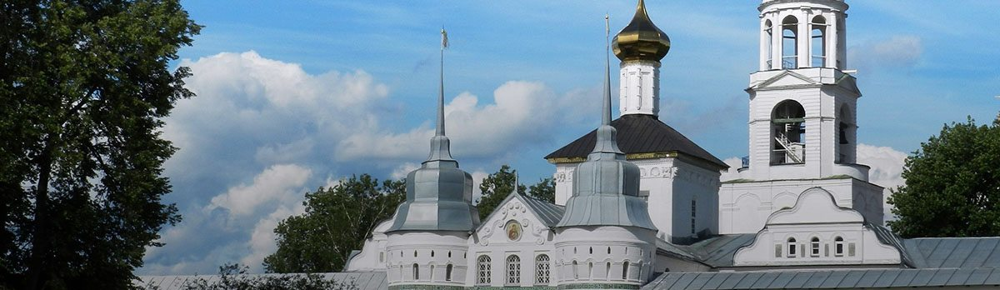
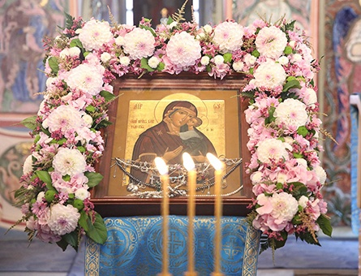
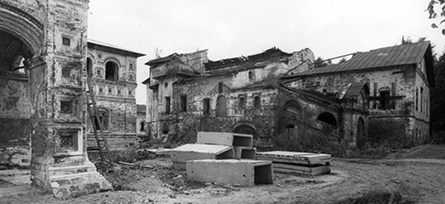
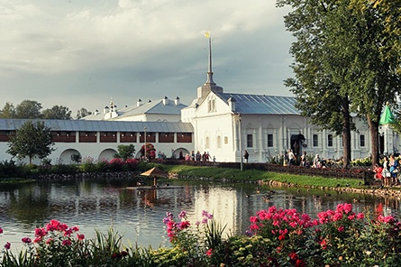
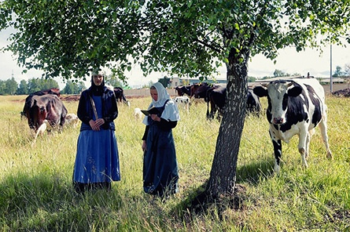

WhatsApp
WhatsApp 

На сайте вы вносите предоплату для бронирования, оставшуюся сумму доплачиваете перед посадкой.

Скидки
За каждую поездку вам начисляется +1% скидки (до 10%).
Не стесняйтесь приводить своих близких и знакомых — если вы заранее забронируете место на 2+ человек, то получите скидку в 10%!
О Добропуте
За последние четыре года, по благословению о. Владимира Головина, сотни людей вместе с нами посетили самые главные места русского православия.
Мы также работаем с церковными приходами и организованными группами.
Отзывы о поездках
Вы можете посмотреть отчеты о последних поездках на наших страницах в социальных сетях:
Удобное размещение
Толгская чудотворная икона
Мощи Игнатия Брянчанинова
Свято-Введенский Толгский монастырь — один из древнейших монастырей России, основанный в 1314 году на месте чудесного обретения иконы Богородицы, позже названной Толгской. В последующие столетия у монастыря сложилась богатая история, наполненная как паломничеством царей и святых, так и трагичными событиями войн и репрессий. За это время, помимо самой Толгской чудотворной иконы и мощей святителя Игнатия Брянчанинова, обителью было накопленно множество святынь и мощей.
Для паломников созданы все условия для удобного пребывания — близко расположенная гостиница с новыми номерами, трапезной и соседствующим уникальным парком из сибирского кедра.
Чудотворная икона Богородицы Толгская
Однажды, во время своего обратного путешествия в Ярославль, епископ Ростовский Трифон со путниками остался ночевать на берегу Волги. Проснувшись ночью, владыка заметил на противоположном берегу реки яркий столп света. Решив никого не будить, он помолился и направился на другую сторону, перейдя по отражению от столпа, словно по мосту. Приблизившись, епископ увидел парящий в воздухе образ Пресвятой Богородицы, держащей на руках младенца Иисуса Христа. После долгой молитвы в умиление перед явившимся ему чудом, епископ Тихон вернулся обратно в лагерь и уснул. На утро братия обнаружила пропажу архиерейского посоха и после рассказа епископа о его ночном бдении, направилась на поиски. На месте ночного явления они обнаружили стоящую на земле икону с лежащим подле нее жезлом. От радости, что все происшедшие не было простым сном, владыка сам взялся рубить лес, чтобы воздвигнуть церквовь на месте обретения иконы. Узнав о чуде, множество жителей Ярославля пришло помочь в строительстве, таким образом закончив постройку уже к полудню, а вечером ее освятили во имя Введения во храм Пресвятой Богородицы. С этого события началась история Толгского монастыря.
 НазадСвятитель Игнатий Брянчанинов
Епископ Игнатий — один из самых глубоких и почитаемых православных мыслителей и подвижников 19 века, что засвидетельствовали святые последующих поколений:
Был Великий Арсений, и у нас в России был бы свой Великий Арсений, если бы он пошел другой дорогой. Это — Игнатий (Брянчанинов). Это был великий ум.
Когда я читаю его сочинения, я удивляюсь прямо ангельскому уму, его дивно глубокому разумению Священного Писания. Я как–то особенно располагаюсь к его сочинениям, они как–то особенно располагают к себе моё сердце, моё разумение, просвещая его истинно евангельским светом.
Сочинения преосвященного Игнатия необходимы, они, так сказать, азбука духовной жизни.
Я читаю этот [пятый] том, как изречения святых Отцов.
Епископа Игнатия я читал ещё новоначальным послушником, но все его слова помню и теперь: проходящим молитвенный подвиг просто житья нет от буквоедов. Ах, как справедливо сказал мудрый епископ, и это у него вытекало из своего духовного опыта.
Лучшего учителя для нашего времени нет.
Толгский монастырь для паломников
История обители прервалась в 1928 после закрытия ее советской властью и возобновилось только в конце 1987-го, уже в виде женского монастыря. За 70 лет обитель пришла в запустение и находилась в полуразрушенном состоянии.
Сегодня Толгский монастырь может считаться одним из самых благоустроенных и гостепреимных мест для паломничества. 
Даже на вполне светском ресурсе TripAdvisor.com он стоит на втором месте среди всех достопремичательностей Ярославля, которые стоит посетить по мнению людей.
Подвизающиеся в монастыре монахини несут послушание в том числе и на производстве овощей, меда, выпечки и разнообразной молочной продукции, которую можно как попробовать в трапезной и кафе, так и приобрести к себе домой.
Нельзя не отметить прекрасную и всегда свежеубранную монастырскую гостиницу, благодаря удобству которой снимается вся накопившаяся у паломников усталость от относительно длительного время в дорожном пути.
НазадБлижайшая поездка
∙ 7 октября 2017 суббота ∙
1 день
08:00 отъезд
м. Лермонтовский-проспект
12:00 Ростов Великий
14:00 Ростовская Финифть
14:30 отправление в Толгу
16:00 прибытие и размещение
17:00 вечерняя служба
19:00 трапеза и отдых
2 день
07:00 молитва и акафист
08:00 Божественная литургия
10:30 трапеза
11:30 отъезд
22:00 возвращение в Москву
м. Лермонтовский-проспект
Цена
2200₽
+800₽
Проживание и питание
+350₽
Экскурсии в Ростове
Забронировать поездку
Здесь вы производите только бронирование — оставшиеся 2000₽ нужно будет заплатить непосредственно перед посадкой.
Подробнее о поездке и расписании можно почитать вот здесь. Если у вас есть какие-то вопросы, не стесняйтесь позвонить нам или написать WhatsApp на номер +7(909)907-15-59.
И чтобы не забыть — если вы заранее бронируете более 2 мест, то на каждое из них будет действовать скидка 10%! Для этого нужно в строчке "сумма" указать стоимость, умноженную на количество бронируемых мест (2700, 4050 и т.д.).
НазадСкидки
За каждую поездку вам начисляется +1% скидки (до 10%).
Не стесняйтесь приводить своих близких и знакомых — если вы заранее забронируете место на 2+ человек, то получите скидку в 10%!
О Добропуте
За последние четыре года, по благословению о. Владимира Головина, сотни людей вместе с нами посетили самые главные места русского православия.
Мы также работаем с церковными приходами и организованными группами.
Отзывы о поездках
Вы можете посмотреть отчеты о последних поездках на наших страницах в социальных сетях: